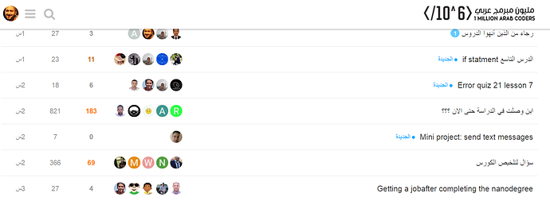
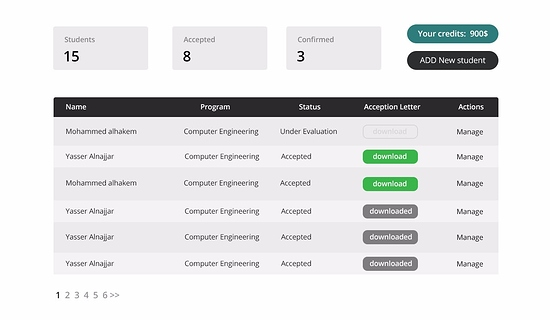
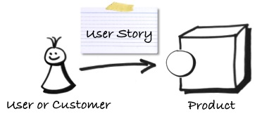

سيكون المشروع عبارة عن نظام منتدى بسيط جداً… يحاول أن يغطي أغلب المواضيع التي لها أهمية :wink: مشابه لمنتدى المبادرة:

ببساطة هو مثل الرؤية للمشروع, مثال عليه:

في الصورة في الأعلى قمنا بعمل wireframe لأحد المشاريع الذي عملنا عليها أنا وصديقي… بحيث نرى فيه المتطلبات من المشروع (الوظائف الذي مطلوبة من البرنامج أن يقوم بها) بشكل واضح جداً.
أيضاً, هو مهم جداً في حال كنت تتعامل مع زبون (client) وطلب منك شيء معين… لذا ستريه الـ wireframe, وإذا أعجبه ستقوم ببناء البرمجية
ربما يتكون الـ wire-frame من صفحة أو صفحتين أو 100 صفحة… لا يهم, المهم أن يغطي كل المتطلبات !
سنستعمل الورقة والقلم ببساطة لنرى النتيجة النهائية من بناء المشروع المتفق عليه. إذا كنت تعمل مع فريق (في المستقبل), بالتأكيد سيقوم بها الشخص المتخصص في مجال الواجهات الرسومية Front-End Developer لأن لديه خبرة أكبر في (User Interface & User Experience)… كما قام بها صديقي باستعمال الـ Photoshop.
قصص المستخدم - User Stories:

يقوم الزبون (client) غالباً بإخبارك بما يريد بسرده كلامياً (على ايميل), أو ربما يتصل بك ويخبرك مباشرة, وبعضهم قد يلتقي بك.
هنا يمكن دورك في أخذ هذه المعطيات وبناء wireframe.
ربما لن تعجب الزبون (client), وسيخبرك بأنه غير مناسب بشكل معين… وستقوم بالتعديل عليه بالنقاط الجديدة التي أخبرك بها وترسل له ليراجعها وهكذا, تسمى هذه العملية (iterating) !
تخيل أنك قمت ببناء البرمجية بدون أن تستعمل الـ wireframe وأنك فقط أضعت الوقت ! لهذا أنصحك دائماً بعرض نسخة أولية ليست مصنوعة من كود… وإنما رسم على ورقة وقلم
إذا أخبرتني أنك ستقوم بعمل الـ wireframe خلال أسبوع لمشروع بسيط فسأخبرك أن لا داعي له, لما ؟
لأنه يفترض أن لا يستغرق أكثر من يوم لإنتاجه… وإلا, سيكون مضيعة للوقت
ما سنقوم ببناءه هو بسيط جداً, مشروع يتكون من أعضاء (members) ومشاركات (posts)… لا نريد أي تعقيدات ولا نريد منتديات فرعية وأقسام.
يستطيع العضو (إنشاء, قراءة, تعديل, سرد, حذف) المواضيع خاصته.
يستطيع العضو (سرد) الأعضاء الآخرين.
يستطيع العضو (قراءة, تعديل) الـ profile الخاص به.
يحتوي الموضوع على شيئين فقط (عنوان, ومحتوى).
يحتوي profile العضو على شيئين فقط (اسمه, وعمره).
يستطيع العضو مشاهدة من أكثر 10 أعضاء لديهم مشاركات.
يستطيع العضو البحث عن الأعضاء الآخرين بالاسم.
يقصد بكلمة سرد (listing), بمعنى, عرض الأعضاء بهذا الشكل:
محمد
ياسر
أحمد
إذا انتهيت من عمل الـ wire frames بالورقة والقلم, أرجوا أن لا تنشر الحل… سأقوم بعمل موضوع مخصص لمشاركة الحلول في مكان واحد.
الغرض أن نجعل الجميع يحاول ومن ثم نرى النتائج
في حال لديك أي استفسارات , تفضل بالسؤال في هذا الموضوع.